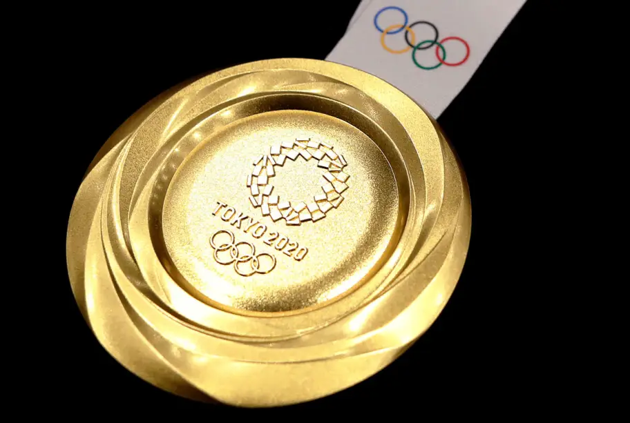
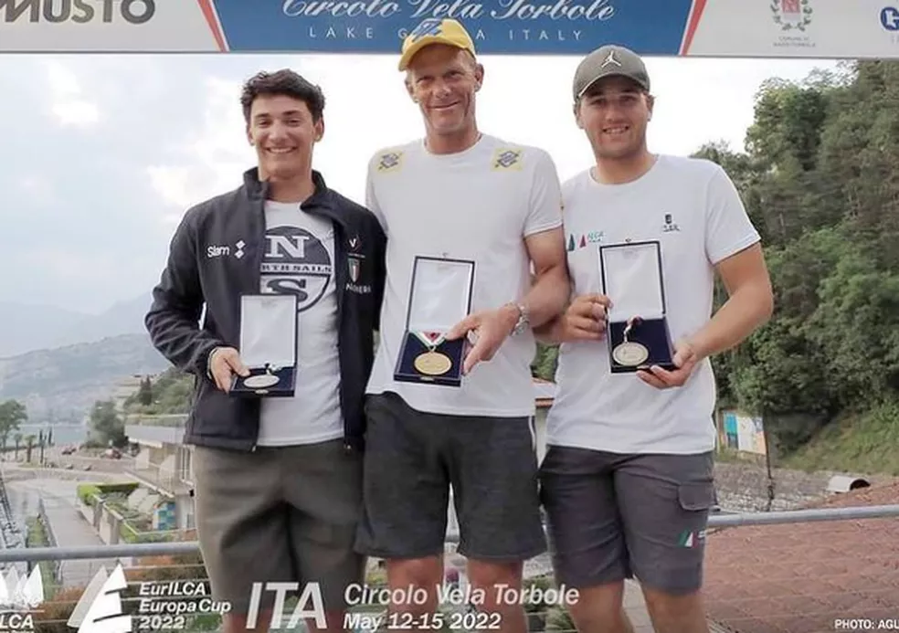

-

medalhas olimpicas
Ouro Atlanta 1996 Laser Ouro Atenas 2004 Laser Prata Sidney 2000 Laser Prata Pequim 2008 Star Bronze Londres 2012 Star
-

Robert Scheidt voltou ao topo do pódio no último fim de semana
-
tem como patrocinador BANCO DO BRASIL